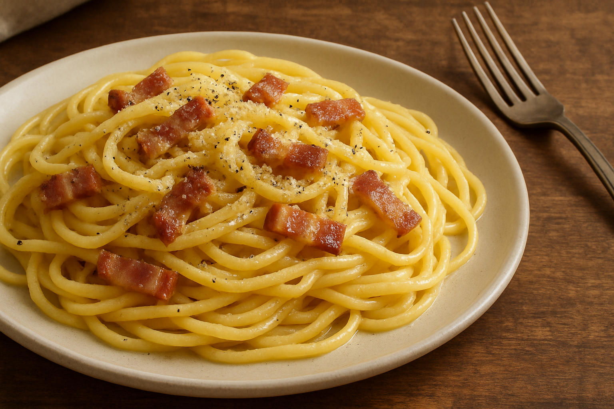

Spaghetti Carbonara

Her er en simpel og autentisk opskrift på spaghetti carbonara, som du kan lave på under 20 minutter.
Du får brug for få ingredienser, og resultatet er en cremet, smagfuld ret uden fløde. Perfekt til en hurtig hverdagsmiddag!
Ingredienser (2 personer)
- 200 g spaghetti
- 100 g pancetta eller bacon (skåret i små tern)
- 2 æg
- 50 g friskrevet Pecorino Romano eller Parmesan
- 2 spsk olivenolie
- Salt
- Friskkværnet sort peber
Fremgangsmåde
- Kog spaghetti i rigeligt letsaltet vand efter pakkens anvisning, indtil den er “al dente”. Gem ca. ½ dl af kogevandet, inden du hælder pastaen fra.
- Mens spaghetti koger, varm olivenolie i en pande ved middel varme. Tilsæt pancetta eller bacontern og steg, indtil de er sprøde og gyldne (ca. 5–6 minutter). Skru ned for varmen, så det ikke brænder på.
- I en skål piskes æg sammen med den revne ost, et godt nip salt (vær forsigtig – osten er allerede salt) og et par gode kværn friskkværnet sort peber. Sæt til side.
- Når pastaen er færdigkogt, hældes vandet fra, og pastaen rykkes direkte over i panden med pancetta. Rør hurtigt rundt, så pastaen bliver let dækket af fedtet fra pancettaen. Tag straks panden af varmen.
- Tilsæt ægge- og osteblandingen til pasta og pancetta, mens du rører kraftigt. Varmen fra den nyligt kogte pasta og panden tilbereder æggene blidt, så du får en cremet sauce. Hvis saucen virker for tyk, tilsæt lidt af det gemte kogevand, indtil den ønskede konsistens er nået.
- Smag til med ekstra peber og evt. en smule salt. Anret straks på varme tallerkener, og drys evt. lidt ekstra revet ost og friskkværnet peber ovenpå.
- Server med det samme – carbonara skal nydes varm og lige fra panden.